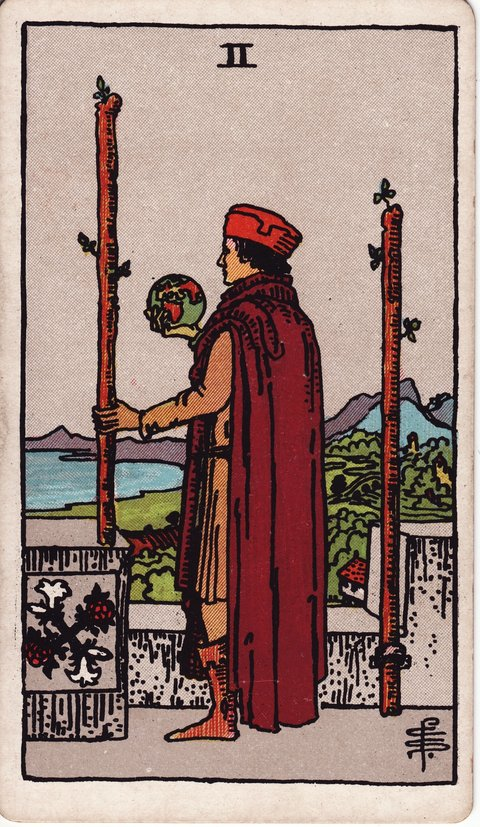

완드 · 타로 카드 백과사전
완드 2

정방향
키워드: 장기적 계획 · 확장의 기로 · 미래에 대한 통찰 · 넓어지는 시야 · 다음 무대 구상 · 도약 준비
조언: 지금의 성과에 머무르지 말고 한 걸음 더 나아갈 큰 그림을 그려보세요.
연애운
솔로
새로운 사람을 만나기보다 어떤 사람을 원하는지 스스로 정리해보는 시기입니다. 이상형을 막연히 그리기보다 구체적인 조건을 세워보면 만남의 방향이 뚜렷해집니다.
커플
관계의 다음 단계를 진지하게 그려보는 시기입니다. 동거나 결혼처럼 더 큰 약속을 두고 대화를 시작해보면 관계가 한 단계 성숙해질 수 있어요.
재물운
소비
장기적인 재정 계획을 세우기 좋은 시기입니다. 당장의 소비보다 몇 년 뒤를 내다본 저축이나 자산 배분을 고민해보세요.
투자
여러 투자처를 비교하며 큰 그림을 그려보는 시기입니다. 조급하게 결정하기보다 충분한 정보를 모아 다음 단계를 준비하세요.
취업운
구직
장기적인 커리어 방향을 그리며 다음 도전을 준비하는 시기입니다. 당장의 자리보다 5년 뒤 원하는 모습을 그려보고 그에 맞는 자리를 찾아보세요.
이직
다음 커리어 단계를 계획하고 준비하는 시기입니다. 지금 자리에서 배울 것을 다 배웠다면 더 큰 무대로 나아갈 준비를 해보세요.
직장운
팀워크
팀 내에서 더 큰 역할을 맡을 준비를 하는 시기입니다. 리더십을 발휘할 장기 프로젝트가 있다면 지금 자원해보세요.
개인성과
지금 자리에서 승진이나 새로운 직책을 염두에 두고 실력을 쌓는 시기입니다. 당장의 업무 완성도뿐 아니라 앞으로 맡고 싶은 역할에 필요한 역량도 함께 준비해보세요.
사업운
창업준비
사업 확장을 진지하게 계획하는 시기입니다. 지금까지의 경험을 바탕으로 더 큰 시장을 그려보고 구체적인 로드맵을 세워보세요.
운영중
기존 사업을 다음 단계로 넓혀갈 전략을 세우는 시기입니다. 새로운 지역이나 고객층으로 눈을 돌려보는 것도 좋은 방법입니다.
학업운
시험준비
장기 목표를 세우고 시험 준비의 전체 계획을 짜기 좋은 시기입니다. 눈앞의 단원보다 최종 목표를 기준으로 학습 로드맵을 그려보세요.
진로고민
진로나 전공에 대한 장기적인 계획을 세우기 좋은 시기입니다. 여러 선택지를 비교하며 5년, 10년 뒤의 모습을 그려보세요.
건강운
신체
장기적인 건강 관리 계획을 세우기 좋은 시기입니다. 단기 다이어트보다 지속 가능한 생활 습관을 목표로 계획을 세워보세요.
정신
삶의 큰 방향을 고민하며 마음을 다잡는 시기입니다. 지금의 선택들이 앞으로의 삶에 어떤 영향을 줄지 차분히 생각해보세요.
대인관계운
새로운 인연
새로운 인맥을 장기적인 관점에서 넓혀가기 좋은 시기입니다. 당장의 이익보다 오래 갈 수 있는 관계를 우선해서 만나보세요.
기존 관계
관계를 더 넓혀갈 계획을 세우기 좋은 시기입니다. 소원해졌던 인연에 먼저 연락해보는 것도 좋은 시도가 됩니다.
명예운
앞으로의 평판을 위한 장기적인 계획을 세우는 시기입니다. 당장의 인정보다 꾸준히 신뢰를 쌓아가는 태도가 결국 좋은 결과로 돌아옵니다.
이사운
이동에 대한 구체적인 계획을 세우기 좋은 시기입니다. 막연한 바람에 그치지 말고 시기와 방법을 구체적으로 정리해보세요.
자식운
아이의 미래를 위한 계획을 세우기 좋은 시기입니다. 교육이나 진로에 대해 아이와 함께 긴 호흡으로 이야기 나눠보세요.
역방향
키워드: 망설임 · 안주 · 좁은 시야 · 허술한 준비 · 굳어진 발걸음 · 확신 부족
조언: 두려움 때문에 미루고 있는 계획이 있다면 작은 것부터 구체화해보세요.
연애운
솔로
관계를 더 발전시키기가 두려워 머뭇거리고 있을 수 있습니다. 완벽한 상대를 기다리기만 하면 정작 눈앞의 기회를 놓칠 수 있으니 작은 만남부터 시작해보세요.
커플
미래를 그려야 하는 시점에서 확신이 서지 않아 대화를 피하고 있을 수 있습니다. 불편하더라도 서로의 생각을 먼저 확인하는 것이 관계를 지키는 길입니다.
재물운
소비
구체적인 계획 없이 막연하게 미래를 그리고 있을 수 있습니다. 큰 목표만 세우고 실행 방법이 없다면 종이 위의 계획으로 그칠 수 있어요.
투자
확장을 앞두고 자신감이 부족해 결정을 미루고 있을 수 있습니다. 정보 부족이 원인이라면 전문가의 조언을 구해보는 것도 방법입니다.
취업운
구직
확장을 앞두고 자신감이 부족해 망설이고 있을 수 있습니다. 경력이 부족하다고 느껴진다면 작은 프로젝트로 실력을 먼저 증명해보세요.
이직
이직을 고민만 하고 구체적인 행동으로 옮기지 못하고 있을 수 있습니다. 막연한 불안 때문에 미루기보다 실제 시장 상황부터 알아보세요.
직장운
팀워크
팀 차원의 확장 계획이 구체화되지 못한 채 막연하게 논의만 오가고 있을 수 있습니다. 담당자를 정해 실행 계획부터 세워보세요.
개인성과
지금의 역할을 넘어서는 자리를 맡기엔 아직 준비가 부족하다고 느낄 수 있습니다. 작은 업무부터 맡아 실력을 증명해나가는 것이 도움이 됩니다.
사업운
창업준비
사업 확장 아이디어만 부풀려질 뿐 실행 전략은 비어 있을 수 있습니다. 경쟁사 분석이나 고객 검증 없이 큰 그림만 그리면 시행착오가 커질 수 있어요.
운영중
새로운 지점이나 거래처 확보를 놓고 팀원들 사이에 의견이 갈려 결론을 못 내리고 있을 수 있습니다. 소규모 파일럿부터 시도해 실제 데이터로 판단해보세요.
학업운
시험준비
장기 계획 없이 눈앞의 진도만 좇고 있을 수 있습니다. 전체 그림 없이 공부하면 방향을 잃기 쉬우니 학습 계획표부터 다시 세워보세요.
진로고민
진로 계획이 막연해 갈피를 못 잡고 있을 수 있습니다. 관심 분야의 선배나 전문가에게 조언을 구해보면 방향이 뚜렷해집니다.
건강운
신체
건강 관리를 계속 미루기만 하고 있을 수 있습니다. 거창한 계획보다 오늘 당장 실천할 수 있는 작은 습관부터 시작해보세요.
정신
미래에 대한 막연한 불안이 마음을 무겁게 할 수 있습니다. 통제할 수 없는 것을 걱정하기보다 지금 할 수 있는 일에 집중해보세요.
대인관계운
새로운 인연
새로운 인연을 넓히고 싶지만 방법을 몰라 망설이고 있을 수 있습니다. 관심 있는 모임에 먼저 참여해보는 것부터 시작하세요.
기존 관계
알아가는 속도보다 관계를 서두르다 오히려 어색해질 수 있습니다. 거절에 대한 두려움 때문에 다가가지 못하고 있다면 작은 인사부터 건네보세요.
명예운
막연한 기대만으로 평판 관리를 미루고 있을 수 있습니다. 구체적인 행동 없이 시간만 보내면 원하는 평판을 얻기 어려우니 지금부터 하나씩 실천해보세요.
이사운
이동 계획이 막연해 갈피를 못 잡고 있을 수 있습니다. 정보가 부족하다면 발품을 팔아 직접 조건들을 확인해보는 것이 좋습니다.
자식운
막연한 기대만으로 계획을 미루고 있을 수 있습니다. 아이의 상황을 구체적으로 살펴보지 않으면 현실과 동떨어진 계획이 될 수 있으니 주의하세요.
같은 슈트: 완드 에이스 · 완드 2 · 완드 3 · 완드 4 · 완드 5 · 완드 6 · 완드 7 · 완드 8 · 완드 9 · 완드 10 · 완드 시종 · 완드 기사 · 완드 퀸 · 완드 킹
홈에서 직접 카드 뽑아보기 ↗